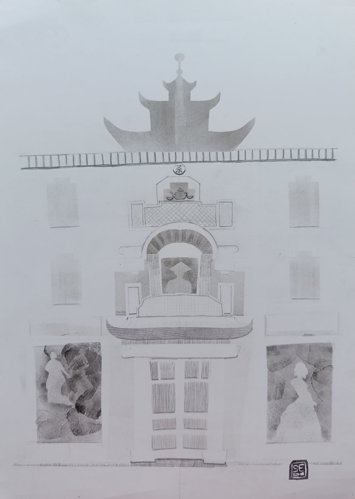
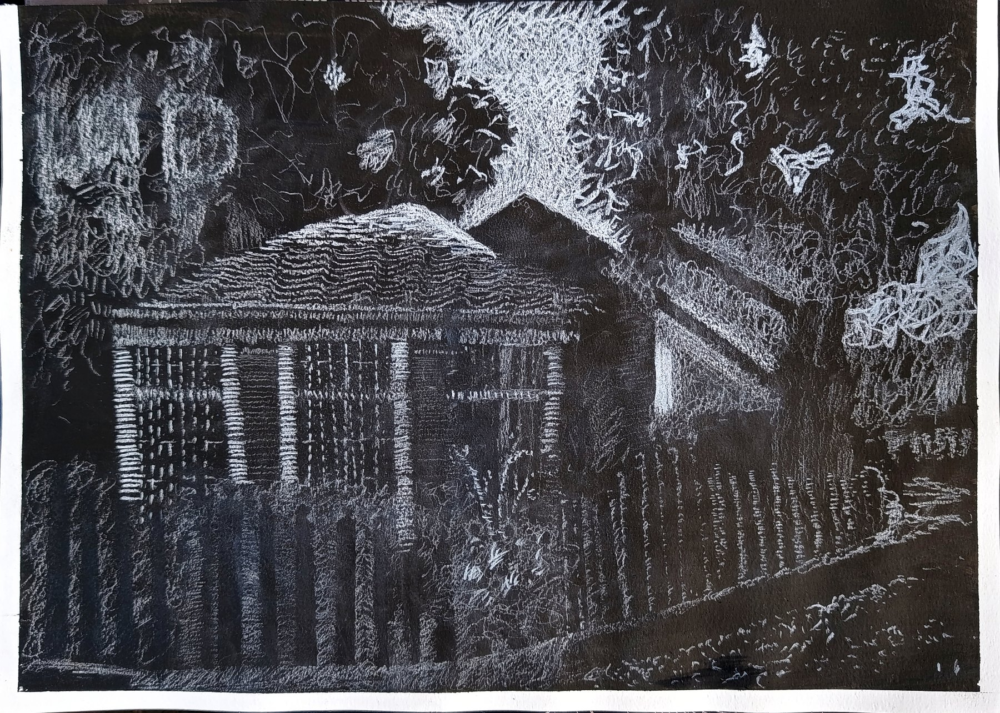
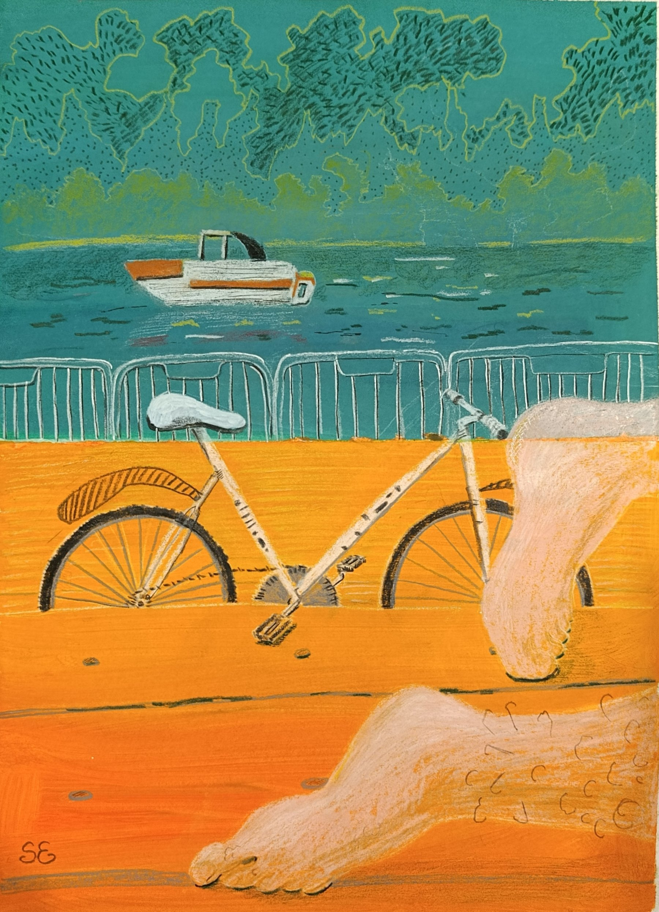
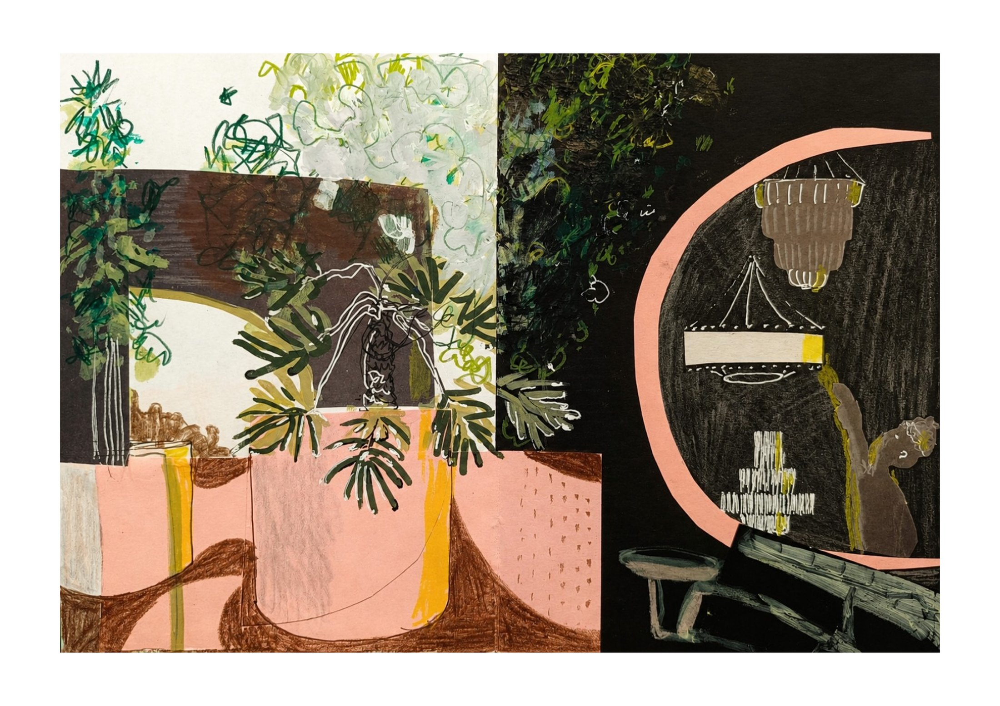
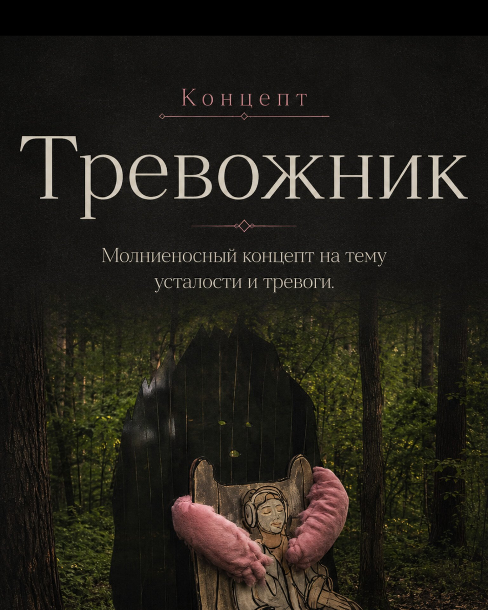

Sonya E. / portfolio
Графика, городские наблюдения и исследовательские проекты
Я наблюдаю город и перевожу найденные сцены в графику: архитектуру, маршруты, рынки, транспорт, людей, случайные ритмы и свет.
. В работах использую смешанную технику. Моя практика растёт из самостоятельной траектории: занятий у художников, пленэров, лабораторий, чтения и регулярного наблюдения.




Сайт собран как рабочее портфолио: выставочная серия, графика на тёмной бумаге, городские зарисовки, пленэрные наблюдения и концепт объекта.
Works
Работы и серии
Разделы можно читать как разные стороны одной практики: город как маршрут, город как сцена, город как материал для графики и проектов.
Творческий маршрут
Московские здания как личные точки маршрута. Трафарет, дорисовка и ощущение городской памяти.
Белым по чёрному
Свет, фактура и наблюдение на тёмной тонированной бумаге.
Городские зарисовки и наблюдения
Рабочий дневник взгляда: транспорт, парки, люди, случайные сцены и найденные композиции.
Суперметалл
Пленэрные работы о контрасте индустриальной среды, растений, света и цветовых пятен.

Даниловский рынок
Рынок как место цвета, витрин, арок, товарных рядов и повседневного движения.

Тревожник
Концепт объекта на тему усталости, тревоги и невозможности просто отдохнуть.
серия
Творческий маршрут
Серия о московских зданиях, через которые можно прочитать личный маршрут по городу. Я выбираю архитектурные точки не как открытки, а как места с характером: фасады, входы, детали, силуэты. Трафарет даёт ощущение печати и городской памяти, а ручная дорисовка возвращает живое наблюдение.
серия
Белым по чёрному
Серия выполнена на тёмной тонированной бумаге. Здесь изображение строится не линией по белому листу, а постепенным вытаскиванием света из тёмной поверхности. Мне важны не только здания и растения, но и ощущение пространства, где детали проявляются постепенно.
работы
Городские зарисовки и наблюдения
Это дневник наблюдений: быстрые сцены из парков, транспорта, рынков, пляжа, мастерских и городских пространств. В этих работах я ловлю не законченный сюжет, а момент — движение, позу, цветовое пятно, столкновение предметов. Часть зарисовок потом становится материалом для серий и проектов.
пленэр
Суперметалл
Работы с пленэра на территории Суперметалла. Меня интересовали контрасты пространства: растения и индустриальные конструкции, тёмные проходы и яркие цветовые пятна, декоративное и техническое.
наблюдение
Даниловский рынок
Зарисовки о рынке как о живом пространстве: витрины, арки, товарные ряды, цветные пятна, люди и движение. Здесь важна не точная архитектурная фиксация, а ощущение ритма места.
проект
Тревожник
Молниеносный концепт на тему усталости и тревоги. Идея в том, что мы настолько привыкли быть продуктивными и интересными, что даже отдых превращается в задачу. Тревожник появляется в момент, когда человек пытается просто выдохнуть — не напоказ, не «эффективно», а по-настоящему.

About
О себе
Я Соня Е., художница из Москвы. Работаю с графикой, трафаретом, тушью, линером, тонированной бумагой и смешанными техниками. Моя практика выросла из регулярных городских наблюдений: я смотрю на архитектуру, маршруты, рынки, транспорт, людей и случайные сцены как на материал для визуального дневника.
Я строю собственную художественную траекторию: занимаюсь в мастерских у практикующих художников, езжу на пленэры, участвую в лабораториях, читаю и собираю проекты через исследование места и работу с материалом.
Мне важно не закрепляться в одном медиуме, а выбирать форму под идею: рисунок, серию, объект, инсталляцию или исследовательский проект. В центре моих работ — город и человек внутри него: маршрут, память, движение, усталость, отдых и попытка найти своё место в городской среде.
CV
CV / кратко
Выставки
2026 — «Творческий маршрут», групповая выставка.
Лаборатории и обучение
2026 — РЕАКТОР, лаборатория современного искусства. Мастерские, пленэры и занятия у практикующих художников.
Медиа
Графика, трафарет, тушь, линер, тонированная бумага, акриловые маркеры, смешанные техники.
Contact
Контакты
Для заявок, выставок, проектов и связи.